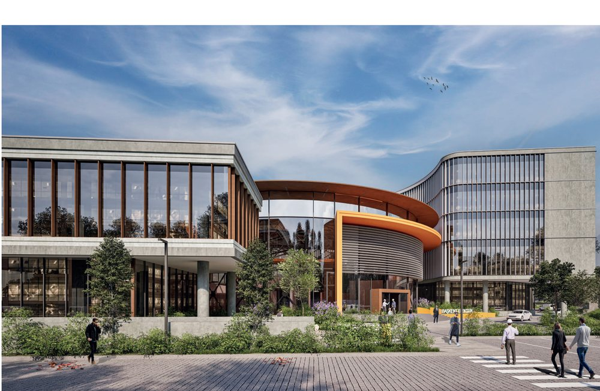
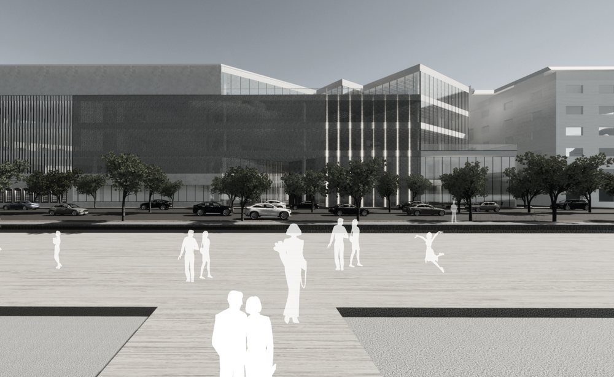

MaCAD · IAAC
Master in Advanced Computation for Architecture & Design
Reframed my understanding of architecture through computational thinking, AI, data-driven methodologies, and emerging technologies.
Open →NİHAN MALKOÇ
Architect Computational Designer
Data AI BIM
Architect passionate about computational design and the future of the built environment. I combine parametric thinking, AI, BIM, and data-driven workflows to design more intelligent, efficient, and human-centered architecture.
MaCAD · IAAC
Reframed my understanding of architecture through computational thinking, AI, data-driven methodologies, and emerging technologies.
Open →Focus areas

NKY Architects & Engineers
Large-scale international projects across healthcare, diplomatic, research, office, mixed-use and public sectors — concept design, BIM coordination and technical documentation.
Open →METU · Middle East Technical University
A rigorous, research-driven design education at one of Türkiye's most prestigious institutions — with selected studio works.
Open →